교통기사 (2016-03-06 기출문제)
1과목: 교통계획
1. 다음 중 사람통행실태 조사방법에 해당하지 않는 것은?
- 노측 면접조사
- 영업용 차량조사
- 가구방문조사
- 확률적 배정조사
(정답률: 62%)

2. 통행발생(Trip Generation) 단계에서 사용하는 회귀분석모형에 대한 설명으로 옳지 않은 것은?
- 모형의 적합도를 판단할 수 있는 결정계수(R2)가 1에 가까울수록 좋은 회귀모형이라 할 수 있다.
- 모든 독립변수들은 서로 독립적이며 변수 간의 상관관계가 높을수록 좋은 ahgd이다.
- 너무 많은 독립변수를 사용한 회귀모형은 통계적 관점에서 적절하지 않을 수도 있다.
- 통행발생량을 예측하는 데 사용되는 독립변수의 예로 가구 수, 자동차 보유대수를 들 수 있다.
(정답률: 69%)
3. 가구통행실태조사에서 조사되는 항목이 아닌 것은?
- 통행 기종점
- 통행목적
- 가구주차면수
- 통행수단
(정답률: 75%)
4. 프라타(Fratar)법은 다음 중 어느 단계의 모형인가?
- 통행발생예측
- 통행분포예측
- 통행수단분담예측
- 통행배정예측
(정답률: 73%)
5. 조사 및 연구대상지역의 범위를 나타내는 선을 폐쇄선 혹은 경계선(Cordon Line)이라고 하는데 이러한 폐쇄선을 선정할 때 고려하여야 할 사항이 아닌 것은?
- 폐쇄선을 횡단하는 도로는 가능한 적게 한다.
- 가능한 넓은 지역이 포합되도록 한다.
- 행정구역의 경계선과 가능한 일치시킨다.
- 도시 주변에 인접한 위성도시나 장래 도시화 지역 등은 가급적 폐쇄선 내에 포함시킨다.
(정답률: 77%)
6. 교통수요 추정을 위한 기초자료로 사용되는 사회경제지표의 예측 모형 중 상한치(K)를 결정한 후 예측하는 기법은?
- 지수곡선법
- 최소제곱법
- 2차 직선법
- 로시스틱곡선법
(정답률: 77%)
7. 다음 중 통행조사 결과를 검증하거나 보완하기 위해 조사지역 내에 하나 혹은 몇 개의 선을 그어 이 선을 통과하는 차량을 조사하는 방법을 무엇이라 하는가?
- 교통존(Traffic Zone) 조사
- 폐쇄선(Cordon Line) 조사
- 스크린라인(Screen Line) 조사
- 희망노선(Desire Line) 조사
(정답률: 83%)
8. 다음 중 보행자 시설별 주요 효과척도의 연결이 옳지 않은 것은?
- 보행자도로 : 보행교통류율, 보행점유공간, 보행밀도
- 계단 : 계단높이, 보행점유공간
- 대기공간 : 보행점유공간
- 신호횡단보도 : 평균보행자지체, 보행점유공간
(정답률: 73%)
9. 버스운영체계 중 공동배차제의 유형에 속하지 않는 것은?
- 수입금 공동관리제
- 차량 공동관리제
- 노선 공동관리제
- 운전자 공동관리제
(정답률: 77%)
10. 편도 15km의 왕복노선을 25km/시의 평균운행속도로 버스를 운행할 때 배차간격 5분을 유지하려면 필요한 총 차량대수는?
- 5대
- 10대
- 13대
- 15대
(정답률: 57%)
11. TSM(Transportation Systems Management)기법을 적용대상 기준으로 구분한 내용 중 적합하지 않은 것은?
- 도로시설 효율화 방안
- 대중교통시설 효율화 방안
- 주차시설 효율화 방안
- 장기적 국가 교통망 운영 효율화 방안
(정답률: 74%)
12. 요금수준, 서비스의 질과 양, 이외에 대중교통 운영자 측에서 조정할 수 없는 변수의 변화에 따른 승객교통량을 상대적으로 추정할 수 있는 개략적인 측정수단으로서 보편적으로 널리 이용되고 있는 방법은?
- 공급탄력성
- 수요탄력성
- 요금의 형평성
- 승객의 편리성
(정답률: 77%)
13. 교통정책의 상위목표에 해당되지 않는 것은?
- 에너지 절약
- 기동성의 향상
- 교통사고의 감소
- 화물수송비용의 감소
(정답률: 77%)
14. 교통정보체계 구축방향에 대한 설명 중 틀린 것은?
- 정보내용의 코드체계를 표준화시킨다.
- 교통정보가 공유되지 않도록 특수체계를 사용한다.
- 모집되어야 하는 자료목록을 작성한다.
- 국토정보체계의 Sub-System이 되도록 한다.
(정답률: 83%)
15. 다음과 같은 교통수요모형에서 지하철 통행비용에 대한 택시 교통수요의 교차탄력성은 얼마인가?
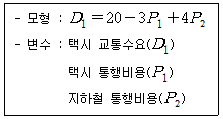
- (-3)+4P2
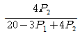
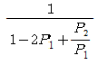
- 4
(정답률: 72%)
16. 장래의 존별 통행발생량을 산출한 후 통행분포 과정 이전에 이용 가능한 교통수단별 분담률을 산정한 후 각 수단별 통행수요를 도출하는 방법은 어떠한 모형인가?
- 통행단 모형
- 통행교차 모형
- 통행발생 모형
- 수단분담률 모형
(정답률: 75%)
17. A지역의 철도시설의 생산유발계수는 1.356, 임금유발계수는 0.360, 고용유발계수는 0.019이고 총사업비 6,000억 원을 투입하여 Awl역의 철도를 건설할 경우 A지역 경제의 생산유발액을 다지역투입산출모형을 적용하여 계산한 값은?
- 8,136억원
- 10,401억원
- 5.862억원
- 5,976억원
(정답률: 58%)
18. 도로 설계의 기본이 되는 장래 교통량으로, 설계 대상 구간을 지날 것으로 예상되는 1시간 교통량으로 주어지는 연평균교통량(AADT)에 설계시간 계수(K)를 곱하여 산출하는 것은?
- 계획 교통량
- 설계시간 교통량
- 최대서비스 교통량
- 1시간 환산 교통량
(정답률: 80%)
19. 중력모형에 의한 통행분포 예측 시 통행임피던스(통행저항)의 함수로 사용되지 않는 함수는?
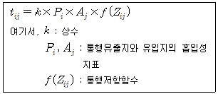
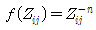
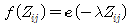
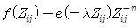
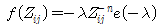
(정답률: 54%)
20. 다음 중 통행 배정의 목적으로 가장 거리가 먼 것은?
- 장래 교통망 대안의 평가
- 기존 교통망 체계의 문제점 진단
- 목표연도별 교통시설 건설사업에 대한 우선순위 결정
- O-D 통행량 산출을 위한 기초자료 제공
(정답률: 66%)
2과목: 교통공학
21. 다음 중 Greernshields의 속도(u)-교통량(q) 모형으로 옳은 것은? (단, uf: 자유속도, kj: 혼잡밀도, um: 임계속도, km: 임계밀도)
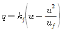
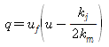
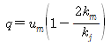
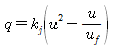
(정답률: 58%)
22. 신호 교차로의 용량에 영향을 주지 않는 요소는?
- 차로폭
- 종단경사
- 신호시간
- 마찰계수
(정답률: 46%)
23. 교통계획 대상 지역 안에 있는 주요 교통문제 지역 50개소에 대한 교통조사를 실시하려 한다. 가장 효율적인 조사계획은 어떤 것인가?
- 조사지점 수가 그리 많지 않으므로 24시간 동안 차종별ㆍ방향별 교통량을 조사한다.
- 24시간 교통량은 대표적인 곳에서만 조사하고 나머지는 16시간(7~23시)만 조사한다.
- 모든 장소에서 출퇴근시간대, 점심시간대에 대해 조사한다.
- 24시간 교통량은 대표적인 곳에서만 조사하고 나머지는 출퇴근시간대에만 조사한다.
(정답률: 67%)
24. 2차로 도로를 주행하는 차량 중 트럭이 5%, 버스가 7%이다. 해당 도로 포화교통류율 산정 시 필요한 중차량보정계수는? (단, 승용차환산계수는 트럭: 1.9, 버스: 1.6임)
- 0.89
- 0.92
- 0.95
- 0.98
(정답률: 45%)
25. 단일 서비스기관의 대기행렬모형에서 평균도착률이 λ, 평균서비스율이 μ일 때 시스템 내의 평균 체류시간을 나타내는 식은?
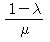
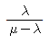
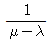
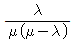
(정답률: 50%)
26. 도시부 4차로 국도에서 평균지점 속도를 추정하는 과정에서 표본 수가 60개일 때, 95% 신뢰수준에서 허용오차는? (단, 도시부 4차로 국도에서 지점속도의 표준편차는 7.9km/h)
- ±1.0km/h
- ±1.7km/h
- ±2.0km/h
- ±3.9km/h
(정답률: 48%)
27. 교통용량은 보통 어떻게 나타내는가?
- 대/일
- 대/차선
- 대/시간
- 대/km
(정답률: 61%)
28. 고속도로를 운행하는 운전자에게 제공하는 고속도로의 서비스 수준 분석 시 효과척도로 사용되는 것은?
- 밀도
- 지체율
- 도로폭
- 속도
(정답률: 56%)
29. 차량속도가 40km/h인 교차로에서 차량탐지기가 40m 전방에 설치된 반감응식 교통신호등의 단위 연장(Unit Extension) 시간으로 적절한 값은? (단, 차량이 정지선에 도착하였을 때 황색 신호가 시작되도록 설계한다.)
- 3초
- 4초
- 5초
- 6초
(정답률: 49%)
30. 교통량이 최대가 될 때의 속도를 무엇이라 하는가?
- 순간속도
- 자유속도
- 최대속도
- 임계속도
(정답률: 76%)
31. 시간평균속도와 공간평균속도에 대한 설명 중 틀린 것은?
- 시간평균속도는 공간평균속도보다 크거나 같다.
- 시간평균속도는 지점속도를 나타내지 않는다.
- 시간평균속도는 고정된 지점을 통과하는 모든 차량들의 속도를 산술평균한 속도를 말한다.
- 구간 내의 모든 차가 동일 속도로 운행되고 있다면 시간평균속도와 공간평균속도는 같다.
(정답률: 62%)
32. 다음 중 도시부 간선도로(신호교차로로 구성)의 시공도(Time-Space Diagram)로부터 일반적으로 확인할 수 없는 사항은?
- 옵셋(Offset)
- 차량진행대폭(Bandwidth)
- 차량통행시간9Travel Time)
- 개별 차량의 자유속도(Free-Flow Speed)
(정답률: 64%)
33. 다음 설명에 해당하는 용어는?
- 설계속도
- 평균주행속도
- 평균통행속도
- 공간평균속도
(정답률: 42%)
34. 차량속도에 관한 설명 중 틀린 것은?
- 자유속도는 차량이 도로를 주행하면서 외부의 영향을 조금만 받았을 경우 낼 수 있는 속도이다.
- 설계속도는 차량의 안전한 주행을 확보하기 위해 설정하여 도로의 설계, 구조의 기준이 되는 인위적 속도이다.
- 운영속도는 도로의 설계속도를 초과하지 않는 범위 내에서 차량이 낼 수 있는 최대 안전속도이다.
- 지점속도는 특정 지점에서 속도감지기 등을 이용해서 측정한 속도이다.
(정답률: 75%)
35. 다음 중 교통감응신호에 비하여 정주기신호가 갖는 장점으로 옳지 않은 것은?
- 일반적으로 교차로 간격이 연속진행에 적합한 경우 교통감응신호보다 정주기신호가 더 좋다.
- 인접신호등과 연동시키기 편리하며, 교통감응신호를 연동시키는 것보다 더 정확한 연동이 가능하다.
- 일반적으로 설치비용이 교통감응신호에 비해 적게 소요되며 장비의 구조가 간단하고 정비ㆍ수리가 용이하다.
- 독립교차로의 정주기신호에서는 교통량이 많은 경우에 점멸등 운영을 한다.
(정답률: 66%)
36. 다음의 조건에서 유효녹색시간은 얼마인가? (단, 녹색시간 미사용으로 인한 추가 녹색손실시간은 없다.)
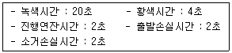
- 18초
- 20초
- 22초
- 24초
(정답률: 63%)
37. 신호교차로에서 정지선을 통과하는 차량 간의 시간차(차두간격)를 다음 표와 같이 나타내고 있다. 이와 같은 상황에서 포화교통류율 A 및 출발손실시간 B(초)는?
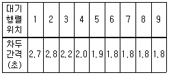
- A : 2,200, B : 18.8
- A : 1,723, B : 2.0
- A : 1,800, B : 2.0
- A : 2,000, B : 2.6
(정답률: 49%)
38. 지방의 도시 내 도로의 시간당 교통량이 120대였고, 첨두 15분간 교통량이 60대라고 한다면 첨두시간계수(PHF)는?
- 0.5
- 0.6
- 0.7
- 0.8
(정답률: 61%)
39. 다음 중 기종점조사방법에 속하지 않는 것은?
- 노측 면접조사
- 자동차번호판조사
- 우편조사
- 이동차량조사
(정답률: 38%)
40. 차두시간(Headway)의 설명으로 틀린 것은?
- 교통류율의 역수이다.
- 앞차와 뒤차의 특정 부분이 통과하는 시간의 차이다.
- 차두시간을 알면 교통류가 정체되었는지, 자유흐름인지 알 수 있다.
- 차간시간(Gap)과 더불어 교통운영에서 매우 중요한 파라미터이다.
(정답률: 53%)
3과목: 교통시설
41. 도로 구분에 따른 중앙분리대의 최소 폭 범위는?
- 1.0 ~ 3.0m
- 1.0 ~ 4.5m
- 1.5 ~ 3.0m
- 1.5 ~ 4.5m
(정답률: 57%)
42. 다음과 같은 조건을 가진 버스의 정류장 정차시간은?
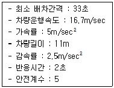
- 약 9초
- 약 12초
- 약 15초
- 약 18초
(정답률: 30%)
43. 도로와 철도가 부득이하게 평면교차하는 경우 그 도로의 구조기준이 틀린 것은? (단, 예외의 경우는 고려하지 않는다.)
- 건널목의 양측에서 각각 30m 이내의 구간(건널목 부분을 포함한다.)은 직선으로 한다.
- 건널목의 양측에서 각각 10m 이내의 구간(건널목 부분을 포함한다.) 도로의 종단경사는 5% 이하로 한다.
- 철도와의 교차각은 45°이상으로 한다.
- 건널목에서 철도차량의 최고속도가 50km/h 미만인 경우 가시구간의 길이는 최소 110m 이상으로 한다.
(정답률: 54%)
44. 정지시거와 추월시거에 관한 설명으로 옳은 것은?
- 정지시거는 설계속도와 관련이 있으나 추월시거는 설계속도와는 거의 무관하다.
- 대체로 추월시거보다는 정지시거가 길다.
- 정지시거는 양 방향 2차로 도로에서 주로 고려되며 추월시거는 차선 수에 관계없이 고려된다.
- 정지시거는 노면의 마찰계수와 밀접한 관계가 있다.
(정답률: 56%)
45. 다음 중 노면의 종류에 따른 차도의 횡단경사 기준이 옳은 것은? (단, 편경사가 설치되는 구간은 고려하지 않음)
- 시멘트 포장도로 : 1.5% 이상 2.0% 이하
- 아스팔트 포장도로 : 2.0% 이상 3.0% 이하
- 간이포장도로 : 3.0% 이상 5.0% 이하
- 비포장도로 : 4.0% 이상 6.0% 이하
(정답률: 69%)
46. 다음 중 설계속도가 60km/h일 때 확보하여야 하는 최소정지시거 기준으로 옳은 것은?
- 55m
- 75m
- 95m
- 110m
(정답률: 66%)
47. 고속도로에 버스정류장을 설치하는 경우, 정류장의 형태 및 설계속도에 따른 버스정류장의 길이가 바르게 연결된 것은?
- 직접식 : 120km/h - 450m
- 평행식 : 120km/h - 540m
- 직접식 : 100km/h - 430m
- 평행식 : 100km/h - 530m
(정답률: 43%)
48. 도로의 구조ㆍ시설 기준에 관한 규칙상 설계속도가 100km/h이고 적용 최대 편경사가 6%인 차도의 평면곡선 반지름은 최소 얼마 이상으로 하여야 하는가?
- 530m
- 460m
- 440m
- 420m
(정답률: 52%)
49. 다음 중 1대당 최소 주차소요 면적이 가장 적은 주차방식은? (단, 차종은 일반형을 기준으로 하고 장애인용 주차단위 구획의 경우는 고려하지 않는다.)
- 30°전진주차
- 60°후진주차
- 60°전진주차
- 90°후진주차
(정답률: 63%)
50. 어느 고속도로 구간의 10년 후 예상 AADT는 70,000대이다. 이 도로구간의 K계수는 0.08, 중방향계수는 0.65, PHF는 0.95이다. 차로당 용량을 2,000vph, 계획서비스수준의 v/c비를 0.75로 가정할 때 필요한 일방향 차로 수는?
- 1차로
- 3차로
- 5차로
- 7차로
(정답률: 61%)
51. 교차로의 폭이 30m이고 차량 길이가 5m, 차량속도가 60km/h, 차량의 감속도가 4.5m/sec2 이라고 할 때 적정 황색 신호 시간은 몇 초인가? (단, 운전자 반응 시간은 1초 이다.)
- 약 2초
- 약 3초
- 약 4초
- 약 5초
(정답률: 54%)
52. 다음 중 주차수요 추정방법으로 적합하지 않은 것은?
- 외삽법
- 주차 원단위법
- 과거 추세 연장법
- 누적 주차수요 추정방법
(정답률: 69%)
53. 다음 중 중앙버스전용차로의 장점으로 옳지 않은 것은?
- 버스의 속도를 제고하고 정시성의 확보가 가능하다.
- 버스 이용자의 증가를 기대할 수 있다.
- 일반 차량과의 마찰을 줄일 수 있다.
- 안전시설의 설치에 따른 비용의 부담이 없다.
(정답률: 74%)
54. 평면곡선부에서 곡선반경이 250m, 편경사가 3%, 횡방향 마찰계수가 0.12인 원곡선 구간의 최대 안전속도는?
- 약 59kph
- 약 69kph
- 약 77kph
- 약 87kph
(정답률: 69%)
55. 다음 두 가지 형태의 교차로에 대한 설명 중 맞는 것은?
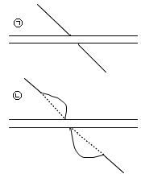
- 둘 다 바람직하다.
- ㉠이 바람직한 설계이다.
- ㉡이 바람직한 설계이다.
- 둘 다 좋지 않다.
(정답률: 70%)
56. 다음 중 입체교차로를 설치할 때의 설치기준과 가장 거리가 먼 것은?
- 교통량
- 도로의 기능
- 주변 지형 여건
- 기후
(정답률: 76%)
57. 보도와 차도의 구분이 없는 주거지역의 도로에서 평행주차형식인 경우 주차대수 1대에 대한 주차단위구획의 길이는 얼마 이상을 기준으로 하는가? (단, 경형 자동차 전용주차구획이 아님)
- 6.0m
- 5.5m
- 5.0m
- 4.5m
(정답률: 66%)
58. 신호등 설치 시 신호등 높이 기준에 대한 설명으로 바람직하지 못한 것은?
- 신호등 높이는 노면에서부터 4.5m보다 낮아야 한다.
- 신호등의 높이는 운전자의 시각특성, 차량의 높이, 교차로 횡단거리, 건축한계 등을 고려하여 결정한다.
- 신호등은 도로를 이용하는 차량의 높이보다 높아야 한다.
- 신호등의 높이는 운전자의 시각특성을 고려하여 앙각(仰角)이 15°이내의 범위에 들면 된다.
(정답률: 59%)
59. 종단경사가 있는 구간에서 자동차의 오르막 능력 등을 검토하여 필요하다고 인정되는 경우에는 오르막차로를 설치하여야 한다. 다만, 설계속도가 일정 수준 이하인 경우에는 오르막차로를 설치하지아니할 수 있는데 그 기준의 최댓값으로 옳은 것은?
- 시속 20km
- 시속 30km
- 시속 40km
- 시속 50km
(정답률: 63%)
60. 지방지역 고속도로의 설계속도는 최소 얼마 이상으로 하여야 하는가?(단, 지형은 평지임)
- 140km/h
- 120km/h
- 100km/h
- 80km/h
(정답률: 54%)
4과목: 도시계획개론
61. C. A. Perry의 근린주구에 대한 설명 중 옳지 않은 것은?
- 근린주구의 규모는 대체로 하나의 초등학교가 필요한 정도의 인구에 대응하는 규모를 갖도록 한다.
- 근린주구는 충분한 간선도로에 의해 구획되는 경계를 갖고 통과교통이 통과하지 않고 우회할 수 있도록 한다.
- 오픈스페이스는 각 근린주구의 요구에 부합되도록 소공원과 레크리에이션 공간체계를 갖도록 한다.
- 서비스 공간을 갖는 학교와 기타 공공시설은 단지의 외곽에 위치시킨다.
(정답률: 57%)
62. 도시ㆍ군계획시설의 결정ㆍ구조 및 설치기준에 관한 규칙상 보행자전용도로의 폭은 최소 얼마 이상으로 설치해야 하는가?
- 1.0m
- 1.5m
- 2.0m
- 2.5m
(정답률: 30%)
63. 도시개발 패러다임과 그 내용의 연결이 옳은 것은?
- 어반빌리지 : 교외화 현상이 시작되기 이전의 인간적인 척도를 지닌 근리주구가 중심인 도시로 회귀하고자 하는 방법으로, 1980년대 미국과 캐나다에서 시작되었다.
- 뉴어바니즘 : 교외지역 주거지를 저밀도로 확산시키고 기존의 도시 또는 신도시지역을 고밀도로 개발하는 방식이다.
- 스마트성장 : 2차 세계대전 이후 교외화로 인한 스프롤 현상을 치유하기 위해 시작된 도시 운동이다.
- 콤팩트시티 : 쾌적하고 인간적인 스케일의 도시환경계획을 목표로 1960년대 영국에서 시작된 개발 방식이다.
(정답률: 60%)
64. 다음 중 도시ㆍ군관리계획의 범위에 대한 설명으로 옳지 않은 것은?
- 용도지역ㆍ용도지구의 지정 또는 변경에 관한 계획
- 도시의 기본적인 공간구조와 장기발전방향을 제시하는 계획
- 기반시설의 설치ㆍ정비 또는 개량에 관한 계획
- 도시 개발사업 또는 정비사업에 관한 계획
(정답률: 54%)
65. 다음의 계획이론에 대한 설명 중 가장 거리가 먼 것은?
- 사이먼(Simon)은 의사결정과정에서 있어서 목표, 수단의 연결고리의 필요성을 강조함
- 에티지오니(Etzioni)는 혼합형 탄색의 접근 방법을 제시함
- 다비도프(Davidoft)는 혼합형 탐색의 접근방법을 제시함
- 린드블룸(Lindblom)은 완전한 정보의 분석에 따른 가치중립적인 의사결정과정이 가능하다고 함
(정답률: 48%)
66. 다음은 A도시의 과거 인구 자료이다. 등차급수법에 의한 10년 후(2015년)의 도시인구는 얼마로 예측할 수 있는가?
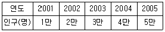
- 10만명
- 12만명
- 14만명
- 15만명
(정답률: 52%)
67. 다음 중 하워드(E. Howard)가 제시한 전원도시의 요건에 해당하지 않는 것은?
- 인구 규모의 확대
- 토지 공개념
- 경제적 자족성
- 개발이익의 사회 환원
(정답률: 62%)
68. 격자형 도로망에 대한 설명으로 옳지 않은 것은?
- 지형이 평탄한 도시에 적합하다.
- 도로기능의 다양성이 결여되어 있다.
- 고대 및 중세 봉건도시에서 흔히 볼 수 있다.
- 인구 100만 이상 대도시에 가장 적합하다.
(정답률: 66%)
69. 국토의 계획 및 이용에 관한 법률에 따른 기반시설 중 공간시설에 해당하지 않는 것은?
- 유원지
- 광장
- 시장
- 공공공지
(정답률: 52%)
70. 토지구획정리사업에서 사업 시행 전에 존재하던 권리관계에 변동을 가하지 않고 원래 토지 소유자의 토지 위치, 지적, 토지이용상황 및 환경 등을 고려하여 사업 시행 후 새로이 조성된 대지에 기존의 권리를 이전하는 행위를 무엇이라 하는가?
- 체비지
- 환지
- 감보
- 지목변경
(정답률: 68%)
71. 고대 그리스의 가로망 특징으로 알맞은 것은?
- 환상방사형
- 지형형
- 격자형
- 불규칙형
(정답률: 68%)
72. 다음 중 르네상스시대 도시계획의 특징과 가장 관계가 먼 것은?
- 비대칭성(Asymmetry)
- 정형성(Formalism)
- 축성(Axiality)
- 개방성(Openness)
(정답률: 64%)
73. 지구단위계획의 목적이 아닌 것은?
- 토지이용 합리화
- 도시의 기능 증진 및 미관 개선
- 건축물 밀도 규제
- 양호한 환경 확보
(정답률: 56%)
74. 샤핀(F. S. Chapin)이 주장한 토지 이용 결정요인 분류에 해당하지 않는 것은?
- 정치적 요인
- 사회적 요인
- 경제적 요인
- 공고의 이익
(정답률: 60%)
75. 멈포드(L. Mumford)가 주장한 로마시대의 도시 분류 중 폐허 단계에 해당되는 도시는 무엇인가?
- Megalopolis
- Parasitopotis
- Necropolis
- Metropolis
(정답률: 64%)
76. 도시의 인구가 처음에는 완만하게 증가하다가 일정 시점 이후에 급격하게 증가하다가 다시 완만하게 증가할 것으로 예상되는 지역의 인구예측에 적합한 모형은?
- 지수성장 모형(Exponential Groeth Model)
- 곰페르츠 모형(Gompertz Model)
- 집단생존 모델(Cohort-survival Model)
- 선형 모델(Linear Model)
(정답률: 59%)
77. 용도지역 중 상업지역의 도로율 기준은? (단, 도로는 도시계획시설로서의 도로를 의미함)
- 10% 이상 ~ 20% 미만
- 20% 이상 ~ 30% 미만
- 25% 이상 ~ 35% 미만
- 35% 이상 ~ 45% 미만
(정답률: 47%)
78. 다음 중 중심지이론에 대한 설명으로 옳지 않은 것은?
- 중심지는 주변 지역의 주민들에게 재화와 용역을 공급해 주는 정주공간이다.
- 중심성은 중심지에서 구매할 수 있는 재화와 용역, 즉 중심기능의 다양성으로 표현한다.
- 1차, 2차 산업이 입지이론이라 할 수 있다.
- 중심지 기능의 도달범위는 공간적 극복비용인 교통비가 결정적 역할을 한다.
(정답률: 65%)
79. 도시공원 및 녹지 등에 관한 법률에서 기능에 따라 세분한 녹지의 종류가 아닌 것은?
- 완충녹지
- 경관녹지
- 보존녹지
- 연결녹지
(정답률: 69%)
80. 다음 중 뷰캐넌 보고서(Buchanan Report)에서 제안한 가로망체계에 해당하지 않는 것은?
- 보행자전용도로
- 집산도로
- 보조간선도로
- 주간선도로
(정답률: 73%)
5과목: 교통관계법규
81. 주차장법상 노외주차장인 주차전용건축물의 건축 제한 기준으로 틀린 것은?
- 건폐율 : 100분의 90 이하
- 용적율 : 1천500퍼센트 이상
- 대지면적의 최소한도 : 45제곱미터 이상
- 대지가 너비 12m 미만의 도로에 접하는 경우 높이 제한 : 건축물의 각 부분의 높이는 그 부분으로부터 대지에 접한 도로의 반대쪽 경계선까지의 수평거리의 3배 이하
(정답률: 58%)
82. 국가교통안전기본계획은 몇 년 단위로 수립하여야 하는가?
- 5년
- 7년
- 10년
- 20년
(정답률: 54%)
83. 국가통합교통체계효율화법상 구성ㆍ운영되는 국가교통 데이터베이스 점검단에 대한 설명 중 틀린 것은?
- 국토교통부장관은 전문가가 참여하는 국가교통 데이터베이스 점검단을 구성ㆍ운영할 수 있다.
- 국가교통 데이터베이스 점검단장은 참여 전문가 중에서 국토교통부장관이 위촉하는 자로 한다.
- 국가교통 데이터베이스 점검단에 참여하는 전문가는 20명 이내의 교통데이터베이스, 교통조사 등에 관한 학식과 경험이 있는 자로 한다.
- 기타 국가교통 데이터베이스 점검단의 구성과 운영에 관한 사항은 자치단체의 장이 정하여 고시한다.
(정답률: 49%)
84. 도로법상 도로의 종류 중 지방도에 해당하는 것은?
- 자동차 전용도로로서 광역시장이 그 노선을 인정한 것
- 중요 도시, 지정항만, 중요 비행장, 국가산업단지 등을 연결하는 도로로서 대통령령으로 그 노선이 지정된 것
- 간선 또는 보조간선 기능을 수행하는 도로로서 특별시장이 그 노선을 인정한 것
- 시청 또는 군청 소재지를 연결하는 도로로서 관할 도지사가 그 노선을 인정한 것
(정답률: 52%)
85. 정차와 주차가 모두 금지된 곳에 해당하지 않는 곳은?
- 도로의 모퉁이로부터 5미터 이내인 곳
- 안전지대의 사방으로부터 각각 10미터 이내인 곳
- 교차로ㆍ횡단보도ㆍ건널목이나 보도와 차도가 구분된 도로의 보도
- 소방용 기계가 설치된 곳으로부터 5m 이내의 곳
(정답률: 54%)
86. 현행 도로관계법령상 자동차가 운행할 수 있는 최고속도는?
- 100km/h
- 120km/h
- 140km/h
- 150km/h
(정답률: 68%)
87. 다음 중 도로교통법상 차마의 운전자가 도로의 중앙이나 좌측 부분을 통행할 수 있는 경우는?
- 편도교통이 혼잡한 경우
- 도로가 일방통행인 경우
- 대형차가 진로를 방해할 경우
- 중앙선이 있는 도로에서 진로를 변경하는 경우
(정답률: 78%)
88. 국토교통부장관은 표준인증기관 및 품질인증기관이 거짓이나 그 밖의 부정한 방법으로 지정을 받은 경우, 업무 일부의 정지를 명할 수 있는데 그 기간은?
- 3개월 이내
- 6개월 이내
- 1년 이내
- 2년 이내
(정답률: 45%)
89. 다음 중 도로교통법상 자동차의 앞지르기 금지 장소에 해당하지 않는 곳은?
- 편도 2차로 도로
- 도로의 구부러진 곳
- 터널 안 또는 다리 위
- 교차로
(정답률: 67%)
90. 노외주차장 설치 시 통보해야 하는 대상은?
- 시장, 군수
- 국토교통부장관
- 도지사
- 경찰서장
(정답률: 64%)
91. 다음 중 도로의 부속물에 해당하지 않는 것은?
- 주차장
- 터널
- 도로관리청이 설치한 공동구
- 낙석방지시설
(정답률: 49%)
92. 다음 중 도로교통법에서 규정하는 통행의 금지 및 제한에 관한 설명으로 옳지 않은 것은?
- 지방경찰청장은 도로에서의 위험을 방지하고 교통의 안전과 원활한 소통을 확보하기 위하여 필요하다고 인정할 때에는 구간을 정하여 보행자나 차마의 통행을 금지하거나 제한할 수 있다.
- 경찰서장은 도로에서의 위험을 방지하고 교통의 안전과 원활한 소통을 확보하기 위하여 필요하다고 인정할 때에는 우선 보행자나 차마의 통행을 금지하거나 제한한 후 그 도로관리 자와 협의하여 금지또는 제한의 대상과 구간 및 기간을 정하여 도로의 통행을 금지하거나 제한할 수 있다.
- 경찰공무원은 도로의 파손, 화재의 발생이나 그 밖의 사정으로 인한 도로에서의 위험을 방지하기 위하여 긴급히 조치할 필요가 있을 때에는 필요한 범위에서 보행자나 차마의 통행을 일시 금지하거나 제한할 수 있다.
- 지방경찰청장이 교통의 안전과 원활한 소통을 확보하기 위하여 필요하다고 인정되어 구간을 정하여 보행자나 차마의 통행을 금지하거나 제한을 하고자 하는 때에는 국토교통부령이 정하는 바에 의하여 그 사실을 공고하여야 한다.
(정답률: 47%)
93. 횡단보도의 설치권자는?
- 특별시장
- 시장ㆍ군수
- 위탁받은 도로관리자
- 지방경찰청장
(정답률: 66%)
94. 부설주차장의 설치기준 중 운동시설인 경우 골프장 1홀당 몇 대를 기준으로 산정하는가?
- 3대
- 5대
- 10대
- 15대
(정답률: 68%)
95. 도로교통법상 경찰서장이 교통에 방해가 될 만한 인공구조물에 대한 관리자의 성명ㆍ주소를 알 수 없어 스스로 이를 제거하여 보간한 때에는 그 인공구조물을 보관한 날부터 며칠간 경찰서의 게시판에 관련 사항을 공고하여야 하는가?
- 14일
- 10일
- 7일
- 5일
(정답률: 67%)
96. 관리청이 지방자치단체인 국가지원 연계교통사업에 필요한 비용분담 규정 중 제1종 교통물류 거점의 연계도로 및 연계도로에 접속하기 위한 시설을 설치할 경우, 개발에 필요한 비용에서 국가가 보조 또는 부담하는 비율은 얼마인가?
- 100분의 30 이내
- 100분의 50 이내
- 100분의 60 이내
- 100분의 80 이내
(정답률: 50%)
97. 다음 중 도로교통법상 횡단보도의 설치기준으로 옳은 것은?(단, 특별한 경우는 제외한다.)
- 지하도로부터 300m 이내에는 설치할 수 없다.
- 육교로부터 200m 이내에는 설치할 수 없다.
- 교차로로부터 400m 이내에는 설치할 수 없다.
- 다른 횡단보도로부터 500m 이내에는 설치할 수 없다.
(정답률: 38%)
98. 도로법상 도로관리청은 몇 년마다 그 소관 도로에 대하여 도로건설ㆍ관리계획을 수립하여야 하는가? (단, 국가지원지방도는 고려하지 않는다.)
- 5년
- 10년
- 15년
- 20년
(정답률: 52%)
99. 다음 중 비탈진 좁은 도로에 긴급자동차 외의 자동차가 서로 마주보고 진행하는 경우 통행의 우선순위가 가장 낮은 것은?
- 내려가는 화물을 실은 자동차
- 내려가는 승객을 태운 자동차
- 내려가는 빈 자동차
- 올라가는 빈 자동차
(정답률: 74%)
100. 다음 중 도로교통법상 용어의 정의가 옳지 않은 것은?
- “차로”란 차마가 한 줄로 도로의 정하여진 부분을 통행하도록 차선으로 구분한 차도의 부분을 말한다.
- “자동차 전용도로”란 자동차만 다닐 수 있도록 설치된 도로를 말한다.
- “고속도로”란 자동차의 고속 운행에만 사용하기 위하여 지정된 도로를 말한다.
- “원동기장치”란 자동차관리법의 규정에 따른 이륜자동차 중 배기량이 150cc 이하인 이륜자동차를 말한다.
(정답률: 66%)
6과목: 교통안전
101. 다음 중 정지시거를 바르게 표현한 것은? (단, P=지각인지 반응시간(초), V=속도(km/h), f= 마찰계수, g=경사)
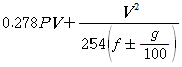
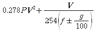
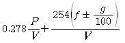
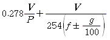
(정답률: 72%)
102. 다음 중 가장 단순하고 가장 직접적인 접근이며, 소도시의 가로, 대도시의 집분산도로 또는 교통량이 적은 지방부 도로에 효율적으로 사용할 수 있는 위험지점 선정기법은?
- 사고건수법
- 사고율법
- 사고건수-율법
- 율-품질관리법
(정답률: 69%)
103. 입체교차형식에 해당되지 않는 것은?
- 역 트럼펫형
- Y자형
- 클로버형
- 다이아몬드형
(정답률: 38%)
104. 다음 중 지하식 보행시설에 대한 설명으로 옳지 않은 것은?
- 나쁜 날씨로부터 보호처를 제공한다.
- 외부를 볼 수 없으므로 방향 감각을 잃기 쉽다.
- 시각적ㆍ물리적으로 도시미관을 해치지 않는다.
- 유지 및 관리가 쉬우며 건설비가 저렴하다.
(정답률: 73%)
1⑤. 자동차가 물기 있는 도로를 고속으로 주행하면 하이드로 프레이닝(Hydro Planing, 수막) 현상이 발생한다. 이때 일반적으로 나타나는 현상이 아닌 것은?
- 앞 타이어가 물 위에 뜬 상태가 된다.
- 브레이크로 제동이 되지 않느다.
- 구동력을 상실한다.
- 시미 모션(Shimmy Motion)이 일어난다.
(정답률: 80%)
106. 다음 중 자동차의 정지거리를 옳게 표시한 것은?
- 공주거리 + 제동거리
- (공주거리 + 제동거리) × 2
- 공주거리 - 제동거리
- (공주거리 - 제동거리) × 2
(정답률: 75%)
107. 전ㆍ후륜의 하중이 유사한 차량이 곡선미끄럼을 하여 각 바퀴의 미끄럼 흔적의 길이가 다음과 같을 때 이 차량의 미끄럼 거리는?
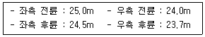
- 23.7m
- 24.3m
- 24.7m
- 25.0m
(정답률: 52%)
108. 다음에서 설명하는 노변 방호책은?
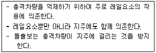
- 연성 방호책
- 반강성 방호책
- 강성 방호책
- 콘크리트 방호책
(정답률: 40%)
109. 브레이크 오일에 발생된 기포가 브레이크의 압력을 흡수하여 브레이크가 제 기능을 발휘하지 못하게 되는 현상은 무엇인가?
- 패도 현상
- 베이퍼록 현상
- 파워핸들의 고장현상
- 브레이크 드럼의 침수현상
(정답률: 62%)
110. 다음 중 율-품질관리법(Rate-Quality Control Method)은 교통사고의 발생이 어떠한 분포를 따른다고 가정하는가?
- 포아송분포
- 이항분포
- 음지수분포
- 지수분포
(정답률: 74%)
111. 어느 차량이 곡선반경 250m인 평면곡선부를 90km/h의 속도로 주행하고 있을 때 미끄러지지 않기 위한 편경사는? (단, 도로의 마찰계수는 0.2, 소수 셋째 자리에서 반올림한다.)
- 약 0.02
- 약 0.04
- 약 0.06
- 약 0.08
(정답률: 59%)
112. 다음 사고다발지점 선정방법 중 부상(사고)의 유형에 따라 가중치를 부여하여 합계 점수가 가장 높은 지점을 선정하는 방법은?
- 시고 피해 정도에 의한 방법
- 사고율에 의한 방법
- 도로의 위험도지수에 의한 방법
- 사고발생빈도수에 의한 방법
(정답률: 79%)
113. 높은 사고발생빈도수를 갖는 지점의 다음 해의 사고발생빈도를 측정해 보면 그 전년에 비해 낮게 나타난다. 이것은 교통사고가 가장 많이 발생한 해에 그 지점이 사고다발지점으로 선정되고, 어느 지점의 사고발생률이 매년 높아졌다 낮아졌다 하는 변화를 하기 때문인데 이러한 현상을 무엇이라고 하는가?
- 사고 이동(Accident Migration)
- 위험 보정(Rik Compensation)
- 위험 회피(Threaten Avoidance) 이론
- 평균으로의 회귀(Regression-to-Mean) 효과
(정답률: 60%)
114. 교통안전의 효과를 측정하기 위한 분석적 틀 중, 사업 시행 전의 자료를 구할 수 없을 경우에 적용되는 기법은?
- 비교평행분석
- 사고비용분석
- 사전ㆍ사후분석
- 통제지점에 의한 사전ㆍ사후 분석
(정답률: 52%)
115. 다음의 교통사고 위험도 평가방법 중 어떤 장소에서 짧은 시간 동안 수시로 충돌에 근접하는 교통현상을 관측하여 그 장소의 사고 위험성을 평가하는 방법은?
- 사고건수법
- 사고율법
- SP 조사법
- 교통상충법
(정답률: 66%)
116. 사고의 재구성에 대한 설명 중 옳지 않은 것은?
- 사고의 재구성은 차량의 속도, 도로상에서의 차량의 위치에 대한 추론을 포함한다.
- 교통통제장비의 지각과 이해에 대한 추론은 관련이 없다.
- 신뢰성 있는 결론을 얻기 위해서는 자료가 부족한 경우가 많다.
- 사고의 재구성에서 가장 기본적인 것은 정지 및 미끄럼 흔적, 회전 시 편주 흔적, 가속 및 충돌 흔적 등 도로의 타이어 자국을 인식할 수 있는 능력이다.
(정답률: 65%)
117. 다음 중 사고지점도에 대한 설명으로 옳지 않은 것은?
- 사고지점도는 통상 일주일 단위로 관리된다.
- 사고가 집중적으로 발생하는 지점의 신속한 시각적 색인을 제공한다.
- 일반적인 사고지점도는 지도상에 핀으로 표시하여 사고지점을 나타낸다.
- 다수의 희생자(사망 또는 부상)를 포함하는 대형사고에 의한 왜곡을 피하기 위하여 희생자 수 대신 사고건수를 나타내는 것이 일반적이다.
(정답률: 74%)
118. 다음 중 평면교차로에서의 상충 유형에 해당하지 않는 것은?
- 합류상충
- 교차상충
- 병목상충
- 분류상충
(정답률: 72%)
119. 도로교통안전을 위한 3E 대책 중 공학(Engineering)과 관련된 대책이 아닌 것은?
- 안전한 도로의 설계
- 사고다발지점의 개선
- 차량의 안전설계
- 속도제한의 실시
(정답률: 68%)
120. 교차로의 3년간 연평균 교통사고건수는 35건, 사고감소율 15%, ADT가 4,000대이다. 이 교차로에 교통안전사업을 시행하였을 때, 3년간 연평균 교통사고 감소건수는? (단, 3년 후 장래 예측 ADT는 6,000대이다.)
- 6.38건
- 7.88건
- 8.38건
- 9.88건
(정답률: 52%)